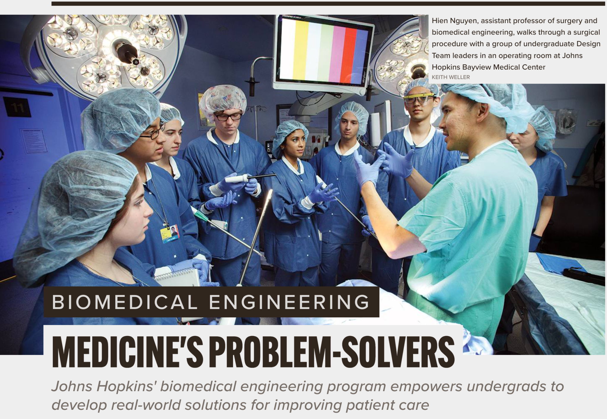

Hello, and |
I'm a medical student at Indiana University School of Medicine, pursuing psychiatry residency. My work spans clinical neuroscience research, healthcare innovation, and legislative advocacy — with a focus on interventional psychiatry, addiction medicine, and scalable approaches to mental health.
I hope for a future with interdisciplinary explorers and empathetic collaborators, building accessible, high-quality mental healthcare for everyone.


About
I'm passionate about psychiatry, neuroscience, and the engineering of better mental healthcare. My research interests include interventional psychiatry, addiction medicine, and innovative, scalable approaches to mental health.
At IU's Neural Systems Laboratory, I'm building quantitative models of alcohol tolerance and cognitive-behavioral effects — work foundational to understanding addiction as a disease of individual variation. Previously at Stanford, I studied Body Dysmorphic Disorder and psychiatric comorbidities in surgical populations, and I've published on opioid prescribing patterns with direct relevance to addiction psychiatry. The National Network of Depression Centers recognized my work in interventional psychiatry with a Best Practices Scholarship in 2025.
Earlier in training, I started Theramate with a Johns Hopkins psychiatrist — mobile app to help providers monitor patients with mood and substance use disorders and reduce readmissions for dual-diagnosis patients. It was my first real lesson in what psychiatry needs: not just better drugs, but better systems.
I also co-founded and exited surgical instrument startup Benegraft (acquired by Osteopore, 2021), served on the venture investment diligence team at Boomerang Ventures with a psychiatry/neurology focus, and teach design thinking as faculty at Purdue's BME program.
Clinical & Translational Research
Alcohol Pharmacokinetics and Cognitive-Behavioral Effects Addiction
2025 – presentInvestigating how alcohol exposure drives acute tolerance through integrated pharmacokinetic data, subjective response measures, and neuroadaptation models. Building quantitative mathematical models of individual and group differences in alcohol sensitivity by drinking phenotype.
Body Dysmorphic Disorder, Psychiatric Risk Stratification & Surgical Outcomes Psychiatry
2023 – 2025Studied the relationship between BDD screening, patient expectations, and cosmetic outcomes. Contributed to research on psychological risk stratification and psychiatric comorbidities in surgical populations. Co-authored publication in Aesthetic Surgery Journal.
Chronic Opioid Prescribing Patterns After Head & Neck Cancer Surgery Addiction
2023 – 2024Analyzed persistent opioid use following surgery, identifying behavioral and clinical risk factors for chronic opioid exposure with direct relevance to addiction psychiatry. Published systematic review in Otolaryngology–Head and Neck Surgery.
FDA-Approved Home-Based tDCS for Major Depressive Disorder Interventional
2025 – 2026Clinical efficacy and implementation considerations of transcranial direct current stimulation for MDD — reviewing evidence for a novel, scalable approach to treatment-resistant depression.
Publications & Patents
Startups & Translational Work
Theramate
2017 – 2019Founded with a Johns Hopkins psychiatrist to build EMR-integrated software allowing providers to monitor patients with mood and substance use disorders, reducing readmissions for dual-diagnosis patients. Only undergraduate admitted to the Hopkins School of Medicine Health Technology Accelerator.
Benegraft, LLC Acquired 2021
2018 – 2021Spun out of Johns Hopkins BME. Led a team of seven to commercialize the first surgical instrument to simplify cartilage graft preparation for rhinoplasty. Raised seed funding, authored IP claims, and led acquisition by Osteopore — debuted at AAO-HNSF 2022.
Boomerang Ventures
2023 – presentConducting due diligence and stakeholder interviews for seed-to-Series A investments in connected healthcare. Focus: digital therapeutics, neurology, VR in pain management, and mental health technology.
Auris Health Acquired by J&J
2019Performed root cause analysis on FDA MAUDE-flagged issues in Auris's telesurgical platform. Devised first software workflows for clinical data retrieval and analysis using Qubole on Amazon S3.
Impatient Optimists
2025 – presentStories about innovators reshaping medicine and leadership. Episodes include Reality Distortion: AI Slop and the Modern Battle for Truth and How a Doctor Brought the da Vinci System to the OR. Listen on Spotify →
Legislative Advocacy
State Delegate and Medical Student Representative, Indiana State Medical Association. Authored or co-authored the following resolutions and legislation:
Writing & Media
Listening Closely
A first-person account of volunteering in the Johns Hopkins pediatric ED — on the gap between clinical care and community need.
State of the Self-Driving Car: Where Are They Taking Us?
A deep technical and societal exploration of autonomous vehicles — from sensor physics to urban planning implications.
The Physician Founder: Reengineering Empathy into Biomedical Technology Innovation
Indianapolis, April 2026.
Interview with Nathan Garland
Fellowships & Awards
Library
Books, essays, and resources I return to and share with students and trainees building at the intersection of medicine and innovation.
Entrepreneurship
Blogs & Resource Libraries
- Growth Unhinged — Product PositioningRead →
- Y Combinator LibraryVisit →
- Startup RidersVisit →
- Andrew Chen — SubstackSubscribe →
- Antler Academy LibraryVisit →
Healthcare Policy
- Eichhorn & Hutchinson — Healing American Healthcare
Finance & Investing
- Warren Buffett — Annual Letters to BRK Shareholders (The Essays of Warren Buffett, Lawrence Cunningham)
- Charlie Munger — Poor Charlie's Almanack
- Peter Lynch — One Up on Wall Street
Personal Philosophy
- Hans Rosling — Factfulness
- David Christian — Origin Story: A Big History of Everything
- Gov. JB Pritzker, Northwestern Commencement — Cruelty is a Coward's Tool